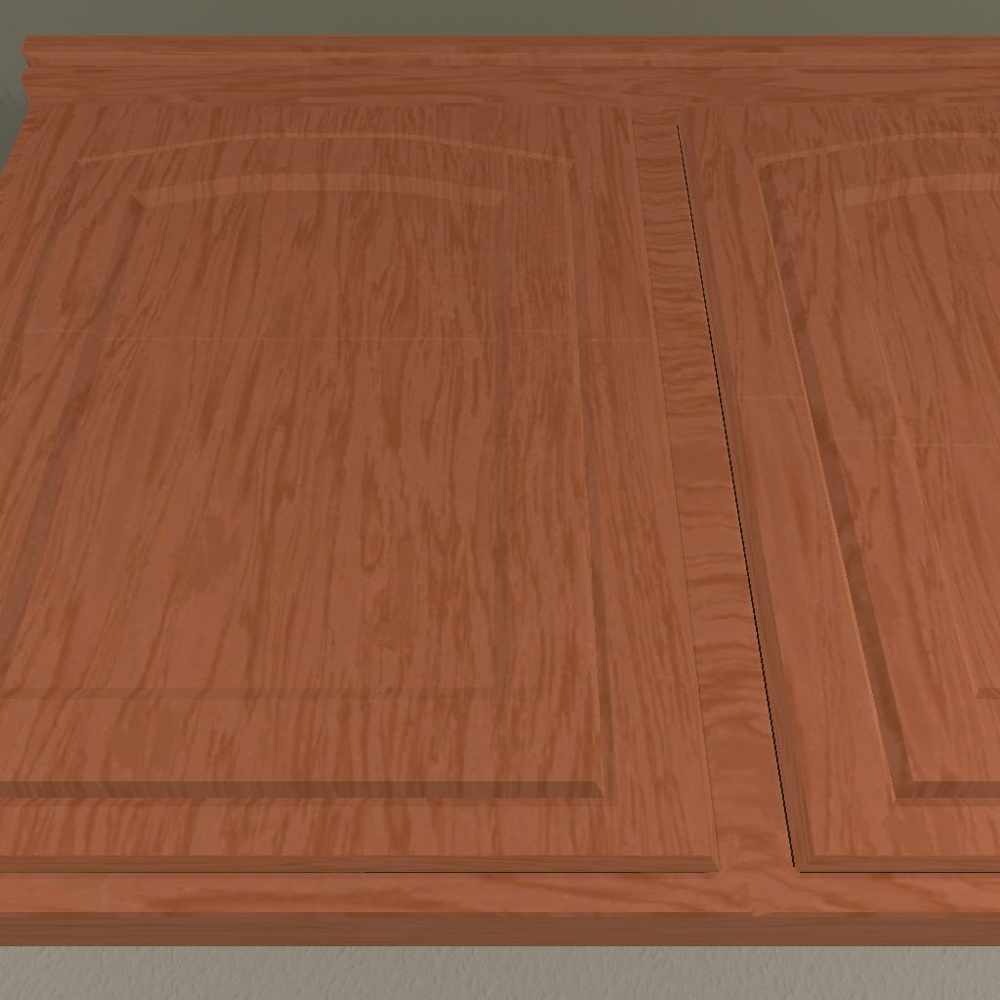
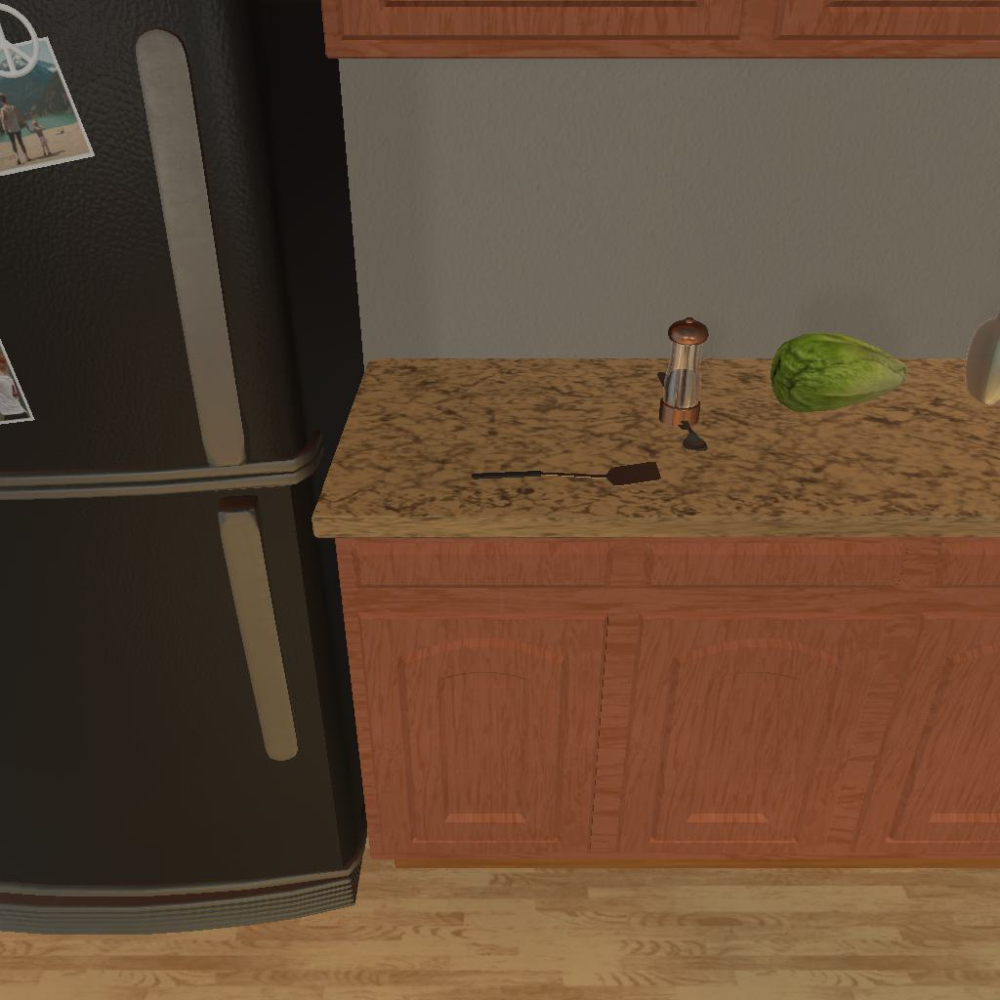

---------------------------------------------------------task: 23---------------------------------------------------------
--------------------------------------------------------------------------------------------------------------------------------------------------------------------
--------------------------------------------------------------------------------------------------------------------------------------------------------------------
Step:--------------------------------------------------------------------------4-------------------------------------------------------------------------------
----------------------------------------
VLM Prompt:
Image1:
Image2:
Image3:
**Instruction**
1. Analyze the provided images to identify all visible household objects and compare the difference between images (e.h. whether the object is opened or not and taken on hand or not), focusing on those relevant to the task description "put a hot mug in coffeemachine."
2. Use the analysis of images and the task hint "The agent must find an object of the desired type, pick it up, go to a microwave, heat the object with the microwave, then find the correct location to place it, and put it down there. The agent does not need to use the microwave button or open the microwave to heat the object, and the agent just needs to do action that is "heat the object with the microwave"." to answer the question: what is the most reasonable action in the choices for the task description "put a hot mug in coffeemachine"?
3. Decide and write the answer using the template: The answer is: (i): , where i is the real number. If there is no desired object in images, search every place based on **Initial Observation** to find the object. And if no one is exactly correct, choose a similar answer.
**Initial Observation**
You are in the middle of a room. Looking quickly around you, you can see cabinet (1-15), fridge (1), countertop (1-4), drawer (1-4), microwave (1), toaster (1), coffeemachine (1), garbagecan (1), sink (1), stoveburner (1-3), sinkbasin (1)
**Answer Choices**
(1): go to cabinet 1
(2): go to cabinet 3
(3): go to fridge 1
(4): go to countertop 1
(5): go to cabinet 5
(6): go to cabinet 6
(7): go to cabinet 7
(8): go to drawer 1
(9): go to drawer 2
(10): go to cabinet 8
(11): go to drawer 3
(12): go to cabinet 9
(13): go to cabinet 10
(14): go to drawer 4
(15): go to cabinet 11
(16): go to toaster 1
(17): go to cabinet 12
(18): go to cabinet 13
(19): go to cabinet 14
(20): go to cabinet 15
(21): go to countertop 2
(22): go to coffeemachine 1
(23): go to garbagecan 1
(24): go to countertop 3
(25): go to countertop 4
(26): go to sink 1
(27): go to stoveburner 1
(28): go to stoveburner 2
(29): go to stoveburner 3
(30): go to sinkbasin 1
(31): open cabinet 4
(32): close cabinet 4
(33): examine cabinet 4
**Answer**
Let's think step by step by following the instructions.
----------------------------------------
----------------------------------------
Original Response:
First, we need to analyze the images:
Image1: Shows closed cabinets.
Image2: Shows a microwave on the countertop.
Image3: Shows an open fridge, a countertop with a mug, chocolate, and lettuce.
Comparing the differences between the images, we can note that the mug is visible on the countertop in Image3.
Now, let's consider the task description "put a hot mug in coffeemachine" and the task hint. The agent needs to find a mug, heat it in the microwave, and then put it in the coffeemachine.
From the Initial Observation, we know there is a coffeemachine (1) in the room. From Image3, we can see that there is a mug on countertop 1.
Considering this, the most reasonable action to accomplish the task would be to first heat the mug with the microwave. However, we don't need to use the microwave button or open it, we just need to perform the action of heating the mug with the microwave. After heating the mug, we should go to the coffeemachine to place the hot mug.
Based on the answer choices, there is no option to heat the mug with the microwave, but the closest action related to our task would be to go to the coffeemachine after heating the mug. Therefore, the most reasonable action from the given choices would be:
The answer is: (22): go to coffeemachine 1
----------------------------------------
----------------------------------------
>>> Refine Original VLM Response and Get Pure Action: go to coffeemachine 1
----------------------------------------
-----------------------------------------------------------------
Running time: 14.587211608886719 seconds
Total Money: 14.400029999999997
-----------------------------------------------------------------
-----------------------------------------------------------------
Text Observation:You arrive at loc 24. On the coffeemachine 1, you see a mug 1.
-----------------------------------------------------------------
UNSUCCEED